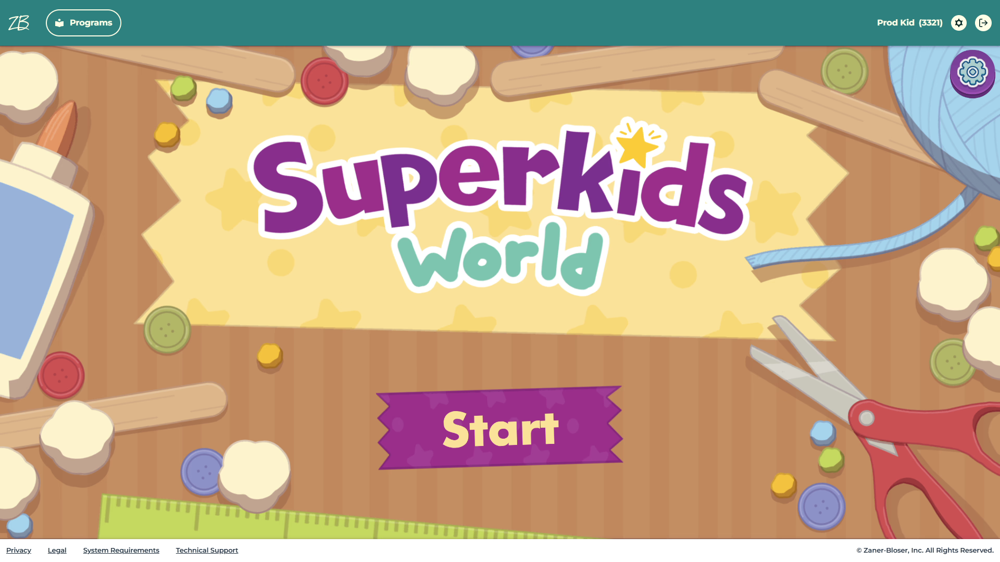

| Game Info | |
| Name: | Superkids World |
| Year: | 2026 |
| Developed in: | TypeScript / Pixi.js |
| Created by: | Filament Games / Zaner Bloser |
| Read More on Filament Games' Website | |
Superkids World is my first professional game project (except for that one time). It is a literacy game for early learners designed to reinforce early reading skills through independant play (read: minigames) and act as a portal to classroom digital materials such as books, videos, and other learning resources.
This game was a professional project as part of my employment at Filament Games. The game was developed by Filament Games for Zaner Bloser for their Superkids Reading Program 2026. I joined the project in April 2025 as an engineer working in TypeScript and I worked on it until it shipped in 2026. I was one of 2 or 3 engineers working on this project.
Most game content was designed by Zaner Bloser, and served up with their API. The game client, made by Filament Games, uses the API to display game contents and persist data between sessions.
Because the Superkids Reading Program is designed to be used in schools, it legally must be compliant with accessibility guidelines. So Superkids World passes WCAG compliance checks and fully playable with a screenreader, with captions support, and various other accessiblity settings.
This game was the first time I really covered a good chunk of the codebase with automated tests (with a peak of around 40% test coverage). And it was successful! I found that it actually saved us from disaster a few times, especially in a few areas which had some tricky edge cases that we were able to safely navigate around without creating regressions.
While the game is segmented into different sections, I pretty much got my fingerprints on every part of the game by the end of the project. But there was one minigame that I had main responsibility on. I ended up creating a novel technical solution for the Text Evidence reading comprehension minigame and I was able to cover it completely with automated tests from the start.